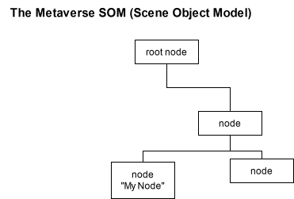

JavaScript¶
A JavaScript script can be attached to any node that is to be streamed to clients. Just as scripts can be incorporated in HTML pages and run client-side in a Web browser, scripts in Teleport that are incorporated in scenes are run client-side. The script on a node has access to
When and how a script is run¶
The script attached to a node is run when the node is first created on the client side. The whole script is run, so any statements that are not wrapped in a function definition are executed immediately (For comparison: in an HTML page, any <script> block is run whenever the page is loaded).
Special functions¶
You can define any function in the script, but certain special named functions will be invoked by the client runtime on specific events.
onEnable(): when the node state changes from disabled to enabled.
onDisable(): when the node’s state changes from enabled to disabled.
onTick(timeStepSeconds): when a “tick” or periodic update occurs. The actual rate depends on system capabilities.
Viewing and Modifying the Scene¶
Scripts have access to scene properties. Specifically, a script attached to a given node can view and modify that node’s properties and those of its children and descendants. This is done via the Scene Object Model (SOM) (for comparison: an HTML script can access the Document Object Model, or DOM).
{kind=link}

Finding SOM Nodes¶
Method |
Description |
|---|---|
scene.getNodeByUid(uid) |
Get the node by its uid (unique id) |
scene.getNodesByName(”name”) |
Get all nodes that have the given name. |
scene.getRootNode() |
Get the root node. |
Each node has a uid that is unique for the scene, i.e. No two nodes in a given client-server context will have the same uid. However, uid’s do not persist across sessions: to identify the same node across multiple sessions, it should be given a name. The root node is the node that the script is attached to. A script has no knowledge of or access to nodes above or outside the hierarchy that starts at its root.
Node Properties¶
Method |
Description |
|---|---|
node.id |
The unique id of the node |
node.name |
The name of the node, which may not be unique |
node.pose |
The node’s pose, its position and orientation relative to its parent |